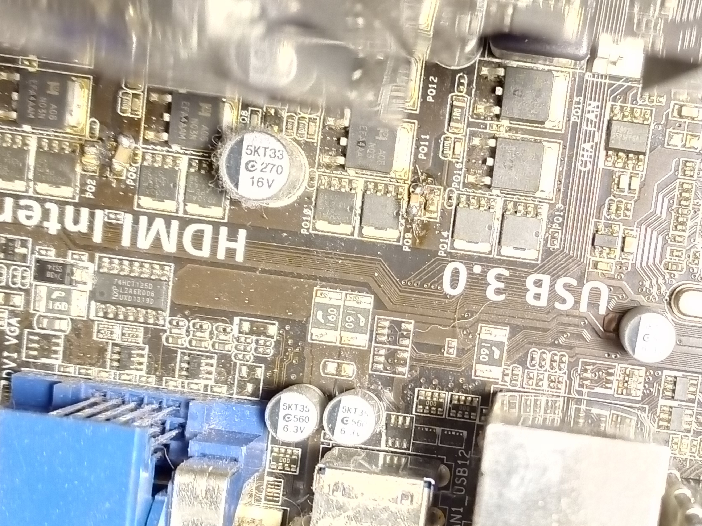
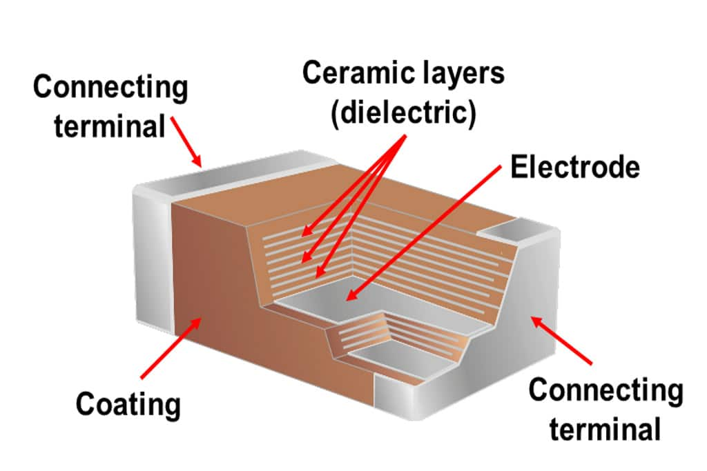

QuickFix: Ceramic Capacitor on my Motherboard
One evening, there was a sudden bang, I felt a wave of heat on my leg, and my PC turned off. There was a burnt smell in the air. A ceramic capacitor had spectacularly failed (yes, those little beasts can pack a punch). Following the source of the smell, I found the damaged ceramic capacitor on my motherboard. Since these components never leave this world quietly, you can easily identify them on an otherwise intact motherboard by their missing half.
As you can clearly see, an entire corner of the ceramic capacitor is missing. I desoldered it with a soldering tip and replaced it with a new capacitor salvaged from an old scrap PCB. The question is: how do I know which one is the right replacement? The truth is, I can’t be certain, as every manufacturer is free to design their components as they wish. Unlike ICs or resistors, capacitors don’t have a standardized coding system.
However, most capacitors in circuits are equipped with generic values and primarily serve to stabilize voltages. Any capacitor can perform this role. Some allow more ripple to pass through, while others take longer or are less responsive — but for most applications, these differences don’t matter. Most ceramic capacitors are suitable for all voltage levels within a PC (with the exception of the PSU). Additionally, the strength of ceramic capacitors compared to electrolytic capacitors lies in their lack of polarity, meaning you can install them in any orientation.
As you can clearly see further to the left, a similar incident occurred several years earlier. I followed the same procedure back then. In total, this motherboard served me well for 13 years. When the fourth ceramic capacitor gave out, I decided it was time for a general upgrade.

The solder joint isn’t exactly pretty, but it served its purpose for years. None of the replaced ceramic capacitors failed again. It was always a different one that gave out.
Why do they fail?
 Source: https://de.xmsinuowei.com/js/htmledit/kindeditor/attached/20230511/20230511105858_78240.png
{kind=link}
Ceramic capacitors are composed of thin, alternating layers of ceramic and metal. Successive metal layers have opposite polarity. If the ceramic layer cracks and the internal layers shift, these metal layers can short-circuit. In most PC applications, these capacitors are used to stabilize voltages. This means one side is connected to the operating voltage, while the other is connected to ground. A short circuit in the power supply occurs with maximum energy, which can amount to dozens of amperes. The thin metal films heat up so much that they literally vaporize, inevitably leading to the “explosion” of the ceramic capacitor.
But why do the layers break?
The primary cause is mechanical stress, such as tension in the circuit board or vibrations. Since PC cases always have at least one fan, the latter is more likely to be the cause. After all, my PC has accumulated many, many hours of runtime over its lifespan.